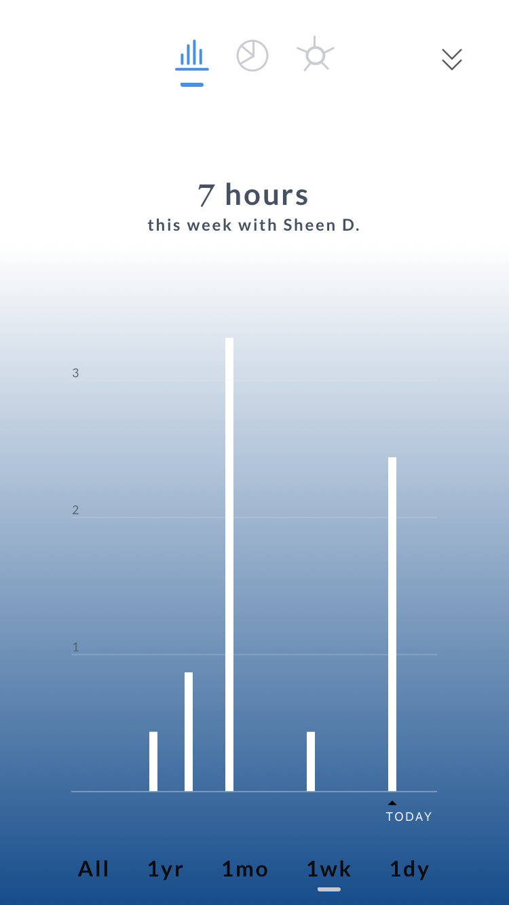
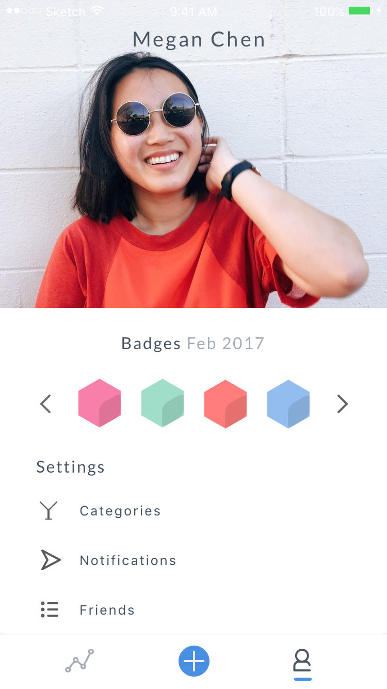
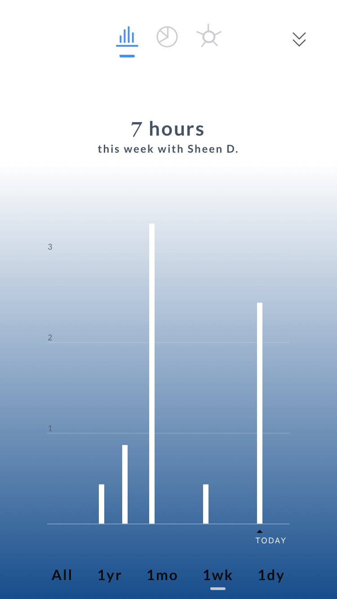
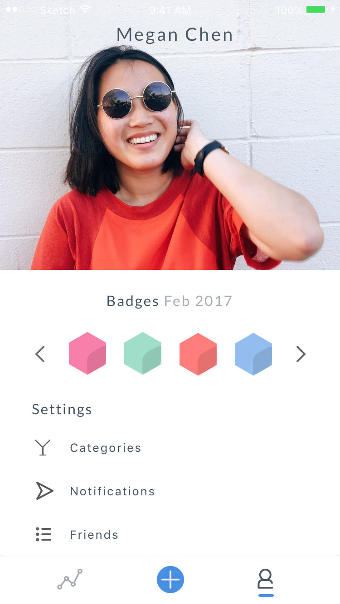

Prototype
Experience amazing functionality that'll inpire you to hangout!
Task 1: Tracking Hangouts
The home screen encourages users to begin tracking their hangouts. Background tracking automatically populates the location and time to make tracking as easy as possible for the customer. By logging these over time, the user starts to build personal social history.
Task 2: Personal Metrics
Once you have tracked multiple hangouts, scroll left and right through the visualization types or down to see a reverse chronological list of hangouts. Our design offers multiple graphical layouts to reflect data previously collected personal metrics. Explore these by tapping on any of the graphs at the top of the screen.
See data related to one specific friend in the friend mode with a blue background instead of white. Also, view your profile containing weekly badges for social health goals. You can also personalize your app experience from here.

 


